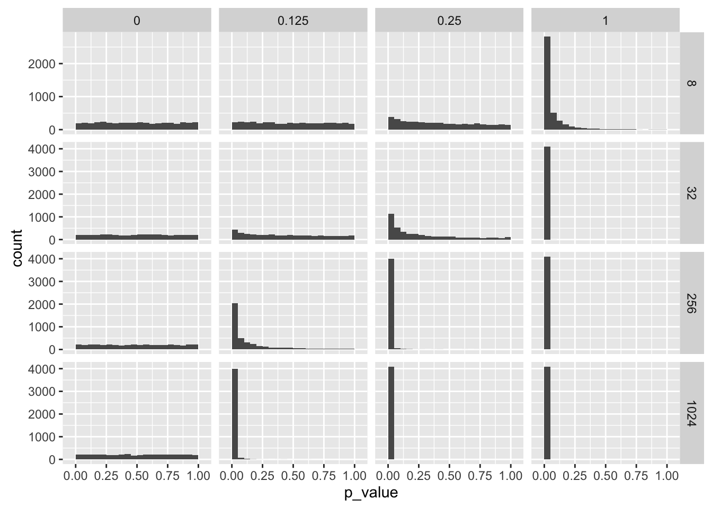
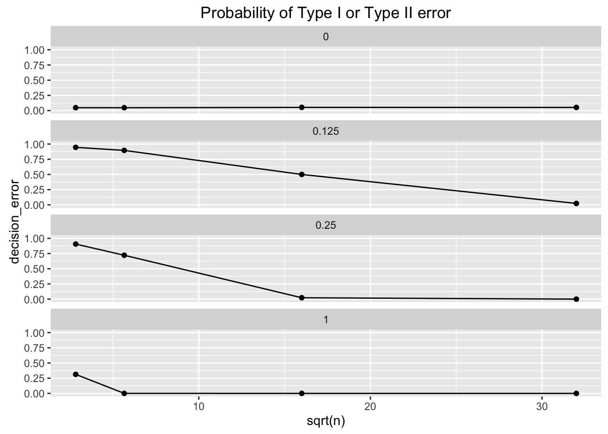
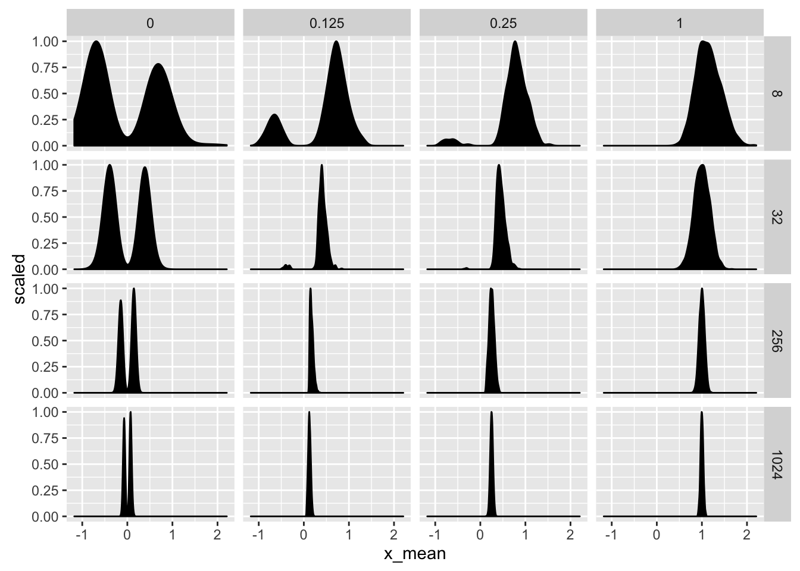

POL S/CS&SS 501, University of Washington, Winter 2016
$$ \DeclareMathOperator{\mean}{mean} \DeclareMathOperator{\var}{var} \DeclareMathOperator{\E}{E} \DeclareMathOperator{\MSE}{MSE} \DeclareMathOperator{\Bias}{Bias} \DeclareMathOperator{\SE}{se} \DeclareMathOperator{\SD}{sd} \DeclareMathOperator{\argmin}{argmin} \DeclareMathOperator{\argmax}{argmax} $$Hypothesis Tests of the Mean
Jeffrey B. Arnold
library("dplyr")
library("ggplot2")
library("tidyr")Significance Tests
p-value vs. significance level
Hypothesis | True | False |
True | | Type I |
False | Type II | |
null_hypothesis <- 0
mu_values <- c(0, 0.125, 0.25, 0.5, 1, 2)
sigma <- 1
sample_sizes <- c(8, 16, 32, 64, 128, 256)
iter <- 4096
results <- vector(mode = "list",
length = length(sample_sizes) *
length(mu_values) * iter)
result_num <- 1
for (i in seq_along(mu_values)) {
mu <- mu_values[i]
for (j in seq_along(sample_sizes)) {
size <- sample_sizes[j]
message("mu:", mu, ", size:", size)
for (k in 1:iter) {
x <- rnorm(size, mean = mu, sd = sigma)
x_mean <- mean(x)
s <- sd(x)
# s <- sigma
se <- s / sqrt(size)
z <- (x_mean - null_hypothesis) / se
p_value <- 2 * pnorm(-abs(z))
results[[result_num]] <-
data_frame(size = size,
mu = mu,
x_mean = x_mean,
s = s,
se = se,
z = z,
p_value = p_value,
same_sign = sign(x_mean) == sign(mu),
effect = x_mean - mu
)
result_num <- result_num + 1
}
}
}
results <- bind_rows(results)
errors <-
results %>%
group_by(mu, size) %>%
mutate(decision_error = ifelse(mu == null_hypothesis, p_value < 0.05, p_value > 0.05),
magnitude_error = ifelse(p_value < 0.05, abs(x_mean - mu), NA),
sign_error = sign(x_mean) != sign(mu)) %>%
summarize(decision_error = sum(decision_error) / length(decision_error),
magnitude_error = mean(magnitude_error, na.rm = TRUE),
sign_error = sum(sign_error) / length(sign_error)) %>%
ungroup()ggplot(errors %>% mutate(mu = factor(mu)),
aes(x = sqrt(size), y = decision_error)) +
geom_point() +
geom_line() +
scale_y_continuous(limits = c(0, 1)) +
facet_wrap(~mu, ncol = 1)
ggplot(errors %>% mutate(mu = factor(mu)),
aes(x = sqrt(size), y = sign_error)) +
geom_point() +
geom_line() +
scale_y_continuous(limits = c(0, 1)) +
facet_wrap(~mu, ncol = 1)ggplot(errors %>% mutate(mu = factor(mu)),
aes(x = sqrt(size), y = magnitude_error)) +
geom_point() +
geom_line() +
facet_wrap(~mu, ncol = 1)res <- mutate(results,
size = factor(size,
levels = as.character(sort(size))),
mu = as.character(mu))## Warning in `levels<-`(`*tmp*`, value = if (nl == nL) as.character(labels)
## else paste0(labels, : duplicated levels in factors are deprecatedggplot(res,
aes(x = p_value)) +
geom_histogram(binwidth = 0.05, mapping = aes(y = ..ndensity..)) +
facet_grid(size ~ mu, scales = "free_y")## Warning in `levels<-`(`*tmp*`, value = if (nl == nL) as.character(labels)
## else paste0(labels, : duplicated levels in factors are deprecated
## Warning in `levels<-`(`*tmp*`, value = if (nl == nL) as.character(labels)
## else paste0(labels, : duplicated levels in factors are deprecated
ggplot(filter(res, p_value < 0.05),
aes(x = x_mean)) +
geom_density(mapping = aes(y = ..scaled..), fill = "black") +
facet_grid(size ~ mu, scales = "free_y")## Warning in `levels<-`(`*tmp*`, value = if (nl == nL) as.character(labels)
## else paste0(labels, : duplicated levels in factors are deprecated
## Warning in `levels<-`(`*tmp*`, value = if (nl == nL) as.character(labels)
## else paste0(labels, : duplicated levels in factors are deprecated
ggplot(mutate(res, sig = p_value < 0.05),
aes(x = x_mean, fill = sig, color = sig)) +
geom_histogram(binwidth = 0.1, alpha = 0.5) +
geom_rug() +
facet_grid(size ~ mu, scales = "free_y")## Warning in `levels<-`(`*tmp*`, value = if (nl == nL) as.character(labels)
## else paste0(labels, : duplicated levels in factors are deprecated
## Warning in `levels<-`(`*tmp*`, value = if (nl == nL) as.character(labels)
## else paste0(labels, : duplicated levels in factors are deprecated
Some notes on Type I and Type II errors:
- For a given test, there is is tradeoff of Type I and Type II error. The fewer false positives, the more false negatives. E.g. in trial a judge could minimize any innocent defendents being declared guilty by ruling not guilty on all trials. However, then all guilty defendents would be declared not guilty.
- Tests generally focus on Type I error, and then for a given Type I error, more powerful tests are preferred. One reason to focus on Type I error, is that Type II error requires specifying a value of the alternative hypothesis, but there is often not just one value.
- Type I error is independent of sample size
Type II decreases with sample size
- For a fixed sample mean and standard deviation: How would the significance change with the sample size?
For a fixed sample mean and sample size: How would the significance change with the sample standard deviation?
Frequentist vs. Bayesian Interpretations
\(p(D | H)\), and \(p(H | D) \propto p(D | H) p(H)\)
Ways that the estimate can break
- finite population
correlated errors
- serial correlation
- cluster correlation
skewed distribution

This work is licensed under a Creative Commons Attribution-NonCommercial-ShareAlike 4.0 International License. R code is licensed under a BSD 2-clause license.